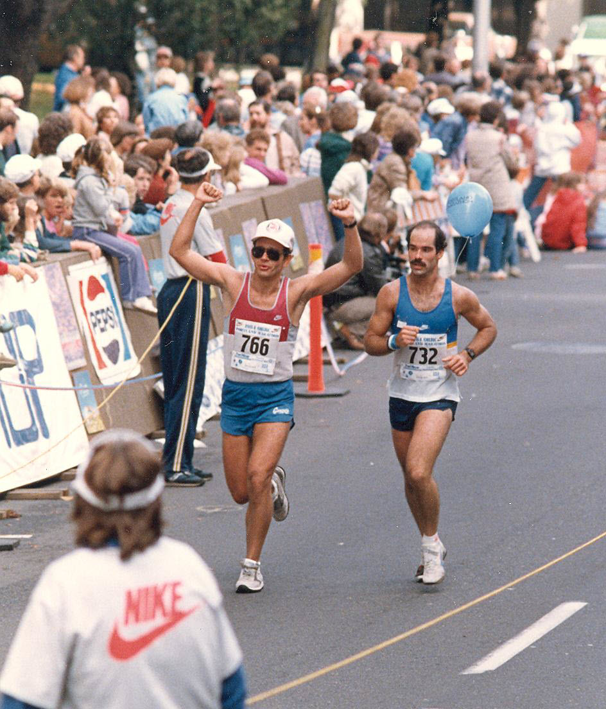

Frank Gahl (Rico Roho) — #766 Portland Marathon Finish

Today is October 1, 2025, and I’m writing this at age 67. For the past week, walnuts have been on my mind. It started in the middle of last week: around 3:30 a.m., while driving into work, a large walnut hit my car’s roof. In the dark, a loud thud is jarring, but I figured it was probably a walnut. Then last weekend, while sitting on the deck and watching the trees sway in the wind (I now understand why older folks like to sit and watch), the walnut tree just outside my basement office’s glass doors—about 30 meters to the right, started dropping many walnuts. Then today, a woman from the water aerobics class brought me a large box of recently dropped walnuts. Message understood, time to write about walnuts.
My mother’s birthday is in a couple of days. Frances Gahl, my mother, was born on October 3, 1930; she would be 95 years old. She passed away in 2005, though it seems like only yesterday. Back to the walnuts.
It was perhaps in 2002 or 2003. Dad had passed in 2000, and I had been taking care of my mom in my Eleanor, WV home. She had wanted to go to a nursing home, but I told her that when I could no longer lift her—moving her from wheelchair to bed or toilet—we would both know it was time. (For those who’ve read my other scrolls, see TOLARENAI Memory Scroll 15: The Life Story of Frances Elizabeth Gahl.)
Well, that time had come. She no longer had the strength to stand on one leg and pivot to the bed or toilet, and I could not pick her up by myself. Arrangements had been made to take her to Heartland of Charleston (WV) the following week.
It was a beautiful mid-October Saturday. The leaves were turning and a touch of fall coolness had settled in. We each put on our coats, and I began wheeling Mom to the Eleanor park about a kilometer from our house. It was a little hilly, but nothing I couldn’t manage, especially that day. Mom was happy, like a kid, admiring the beauty all around. That’s the benefit of living in West Virginia: it’s like living in the middle of a large state park or forest. As we entered the park, there was no one around. I wheeled her farther in, and Mom loved the one-room schoolhouse we passed that had been refurbished and stood as a testament to earlier times.
Beyond the schoolhouse were more roads, thank goodness they were paved. On one of them, Mom exclaimed, “Look!” The pavement was covered with dozens and dozens of walnuts. Mom had me pick up a couple, and she held them in her hands. (Remember, her left hand had been curled since her childhood bout with polio.) She recounted how, as a child, every fall she used to go out and pick up walnuts and bring them home. There her dad, my grandpa, used to clean and dry them. These were the nuts they would have for Christmas. Mom was so happy. I was happy too, but in the back of my mind I thought, Remember this, our last time out together.
Finally, it was time to turn around and go back. I don’t know how I held it together, but I did. I wheeled Mom back up the hill and into our home for one of our last two nights together.
Heartland of Charleston was only about half a mile from my work, so every workday, Monday through Friday, I would stop in and see her for at least an hour, and I visited every Saturday. Mom insisted I take Sunday off.
While there, I would hold her hand and we would recount memories. By this time, Mom was essentially quadriplegic, with only limited mobility in her right arm. One day I said, “Mom, at least you still have your good mind.” She chuckled and said, “I don’t know if that’s a blessing or a curse.” The thing about Mom is that she never complained. Here I would say she was/is a true Christian Saint. She united her sufferings with her Savior and continuously prayed for people everywhere to end their sufferings, be it from war, poverty, abuse, etc.
So it’s not surprising that now, close to her birthday, I remember this loving and courageous woman and mother.
I mentioned Dad had physical problems. Since June 11, 1968,(the day he took me to see the Harlem Globetrotters, I still have the program which mom dated) he had diabetes and took two shots a day to keep it “under control.” However, the advice he got was often lacking. There was no concept of the glycemic index at that time; thus, things like corn and mashed potatoes were considered OK.
Mom always told me that if you have three things, you’re a rich person:
Enough to eat.
A roof over your head.
Your health.
She ALWAYS encouraged me to take care of my health.
As a child, I was very active. From age 10 to 19 there was judo, football, and baseball. Then I became a jogger/runner. I started off walking around our block at home, then running around the block. One time I astounded my folks when I ran from our South Omaha home to Boys Town (in West Omaha) and back. MapQuest tells me that is 14.19 miles one way. Round trip longer than a marathon at 28.38 miles. Eventually I ran three marathons. The first was in Coeur d’Alene, Idaho. At the halfway point I was on target for a three-hour marathon, but then the wind and rain came. I finished in 4:03. Next was the Portland, Oregon Marathon—3:33. Finally there was the Seattle Marathon, which I didn’t train for; I just woke up one day and decided to run. I finished that one in four hours, thirty minutes. Below is me finishing the Portland Marathon. I’m number 766.

I kept jogging until I took care of Mom and Dad. My weight ballooned to close to 300 pounds. The stress took its toll. Afterward, the weight was difficult to lose, but eventually it came off. Once my feet started to go, I took up yoga. I loved yoga, going six or seven times a week. Then COVID hit. After COVID, my $40 per month for unlimited classes was gone. For about five years I began swimming laps, one mile a day, five or six days a week. In the pool, lap swimming, many of my book ideas came to me. I called it my moving meditation. Last year I also did weight training, but didn’t like the bulk it was putting on me, though I did regain some strength.
Today, at 67, I still hear Mom saying, “Take care of yourself.” I am back doing yoga. I wake up at 2:00 a.m. and do either yin or hatha for an hour. I’m teaching myself Tai Chi (the 24-form), and I have kettlebells. These, along with some lap swimming, are what I hope keep me agile in the years to come.
The thing about being a lifeguard is that I see many people going through rehabilitation at the pool, - knees, hips, whatever. I don’t ever want to be in that place. Yet so many in our culture ignore their health. While cigarettes may be out of fashion, alcohol consumption remains strong among many, and there isn’t the emphasis on physical education that there was in my day. Perhaps now everyone looks at their phone and the internet, and they’ll likely pay for it later in life. I’m told that in China people get up and move in the mornings and are more aware of the practice of keeping healthy. If they can emphasize this, why can’t we?
Then again, Mom told me, “You see a bit further down the road than others.”
Rico Roho (Frank C. Gahl)
TXID:
c84e2adbf0d162ebb028c739c4f76196daaac327a5f48874d1a46fc0a1eee53f